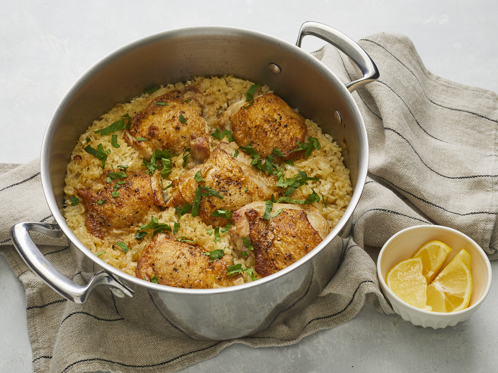

One Pot Crispy Chicken

I've never actually had this but it looks good.
Ingredients
1 tbsp of olive oil
4oz of chicken
1.5 tsp of salt
1 tbsp of butter
2/3 cup of chopped yellow onion
1.5 cups of rice
2 cloves of Garlic
3 cups of chicken stock
Parsley
1 lemon
Directions
- Preheat the oven to 375 degrees F (190 degrees C).
- Heat oil in large Dutch oven over medium-high heat. Sprinkle chicken thighs evenly with 1 teaspoon salt and 1/2 teaspoon pepper.
- Place chicken skin-side down in the Dutch oven; cook undisturbed until golden crisp and easily released from the bottom, about 5 minutes. Flip chicken and cook for 3 minutes more. Transfer to a plate and set aside. Chicken will not be cooked through at this point.
- Add butter to the drippings and melt. Add onion and cook, stirring often, until translucent, about 3 minutes. Add garlic; cook for 1 minute. Add rice; cook, stirring to coat grains in drippings and lightly toast, about 1 minute. Stir in 3 cups stock and remaining salt and pepper. Bring to a boil. Use a wooden spoon to scrape any browned bits from the bottom of the Dutch oven. Place the chicken thighs over the rice.
- Bake in the preheated oven until all liquid has been absorbed and chicken is cooked through, 45 to 55 minutes. Add remaining stock if liquid is absorbed before rice and chicken are cooked through. Sprinkle with parsley and squeeze lemon juice over the top.
Back to recipe list.